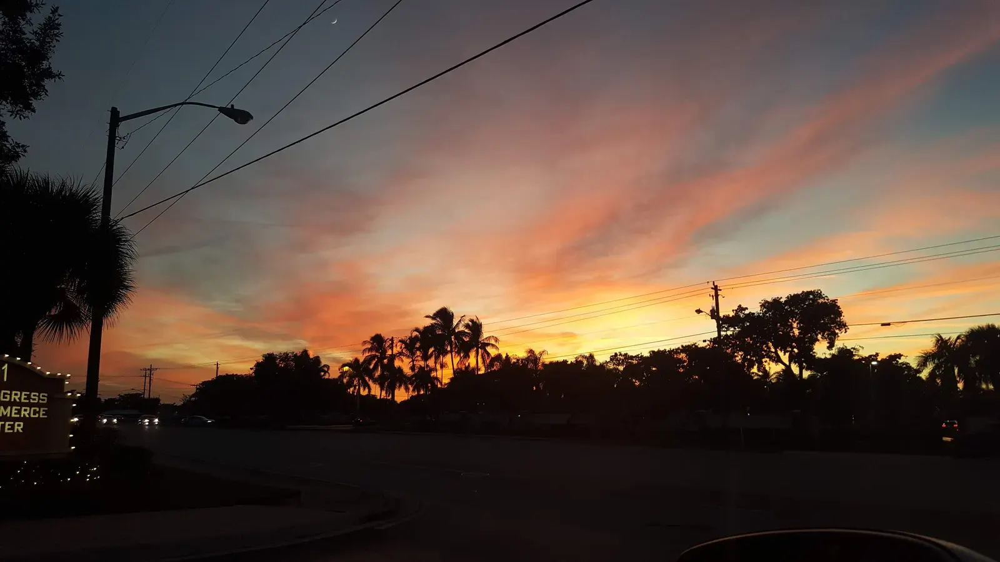

Coconut Creek homes for sale fall into two broad groups: single-family homes in newer gated communities, mostly in the north of the city, and condos and villas in large 55+ communities, mostly in the south. It's an inland Broward suburb, so flood-insurance pressure is generally lower than in the beach cities. Rui Cunha's office in Deerfield Beach is a short drive away, and Coconut Creek is part of his regular territory.
What it's like to live in Coconut Creek
Coconut Creek is a suburban city in northern Broward County, west of Deerfield Beach and Pompano Beach. Florida's Office of Economic and Demographic Research estimated its population at 57,702 as of April 2024 (Florida EDR). It's known for family neighborhoods, newer gated communities and large 55+ sections. It's also one of the areas, with Deerfield and Pompano, where many Brazilians settled from the late 1990s (WLRN).
Neighborhoods and communities
- Wynmoor Village. A 55+ community with about 5,260 homes, generally priced from the low $100Ks to the $400Ks (55places).
- Parkwood. A residential community in the city (Echo Fine Properties).
- Crescent Creek. Another established residential community (Echo Fine Properties).
One local brokerage describes single-family homes in the newer northern communities at about $450K to $750K, and condos and villas in the southern 55+ sections from around $175K (Landmark Signature Realty).
Coconut Creek market snapshot
According to Redfin, the median sale price in Coconut Creek was about $326,000 in February 2025, with homes taking around 116 days to sell (Redfin). That figure is now well over a year old, and more recent summaries we found don't agree with each other, so we're not quoting a 2026 number here.
The bigger point: the citywide median mixes 55+ condos with family homes in gated communities, and those are very different purchases. Prices vary widely by community and by condo vs. house, so ask Rui for a current comparison of recent sales for the homes you're considering.
Practical notes: HOAs, condos and insurance
HOAs. Most homes in Coconut Creek are in homeowners' associations. Before you offer, ask for the HOA fee, what it covers, the rules (rentals, pets, parking, exterior changes) and any planned special assessments.
55+ condos and villas. Florida's 2022 condo safety law requires milestone inspections for buildings of three or more stories (at 30 years for inland buildings) and funded structural reserves (Rimkus). Special assessments from $10,000 to over $100,000 have been reported, especially in older 55+ communities (24-7 Press Release). Ask for the reserve study, budget and assessment history.
Flood and insurance. Being inland generally means less flood-premium pressure than on the coast; FEMA's newer pricing raised premiums most in coastal areas, while inland areas stayed roughly stable (WLRN). Still, check the flood zone for each address and get a homeowners insurance quote early. If your policy is with Citizens, flood coverage is becoming mandatory through 2027 (News4JAX).
Homestead. If the home will be your primary residence, ask a CPA about Florida's homestead exemption.
Schools
Coconut Creek is served by Broward County Public Schools. Coconut Creek High School is at 1400 NW 44th Avenue (Broward Schools). Check school grades with the Florida Department of Education and confirm the assigned schools for any address.
Getting around
Coconut Creek sits inland from Deerfield Beach and Pompano Beach, next to Margate, so beach-city jobs and shopping aren't far. It's a car-dependent suburb, and commute times change a lot with traffic, so test your route at rush hour.
Working with Rui in Coconut Creek
Rui has been in South Florida real estate since 2003, as a mortgage broker, a broker and a licensed General Contractor. He can help you buy a home, look into an ITIN mortgage if you don't have a Social Security number, or sell your home. Run numbers with the mortgage calculator, and compare with nearby Margate and Deerfield Beach.
FAQ
How much is a house in Coconut Creek?
One local brokerage puts single-family homes in the newer northern communities at about $450K to $750K, with 55+ condos and villas starting around $175K. Redfin's last figure we could confirm was a $326,000 median in February 2025, so ask for current sales data.
Is Coconut Creek a good fit for families?
It's a suburban city with family neighborhoods, newer gated communities and Broward public schools, including Coconut Creek High. Whether it fits depends on your budget, commute and school preferences, so visit at the times you'd actually be driving.
Do I need flood insurance in Coconut Creek?
It depends on the address. Inland areas generally see less flood-premium pressure than the coast, but some homes are still in flood zones, and lenders may require coverage there. Check each property before you sign.
Can I buy in Coconut Creek with an ITIN?
Many buyers do, subject to lender approval. See our ITIN mortgage guide or contact Rui.
Talk to Rui
Interested in Coconut Creek? Ask Rui which communities fit your budget and how recent sales compare.